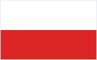
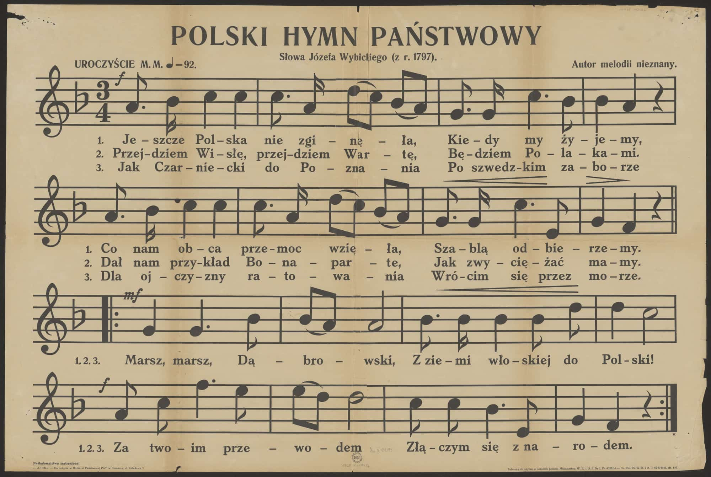
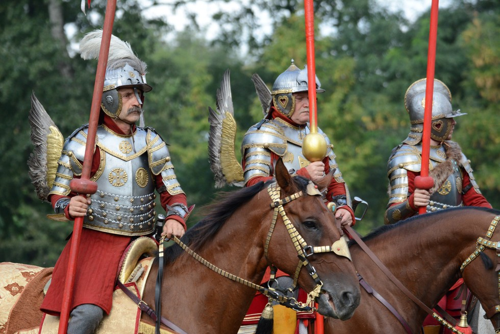
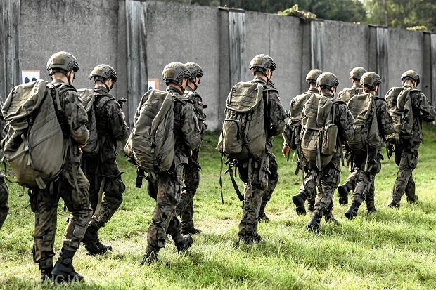
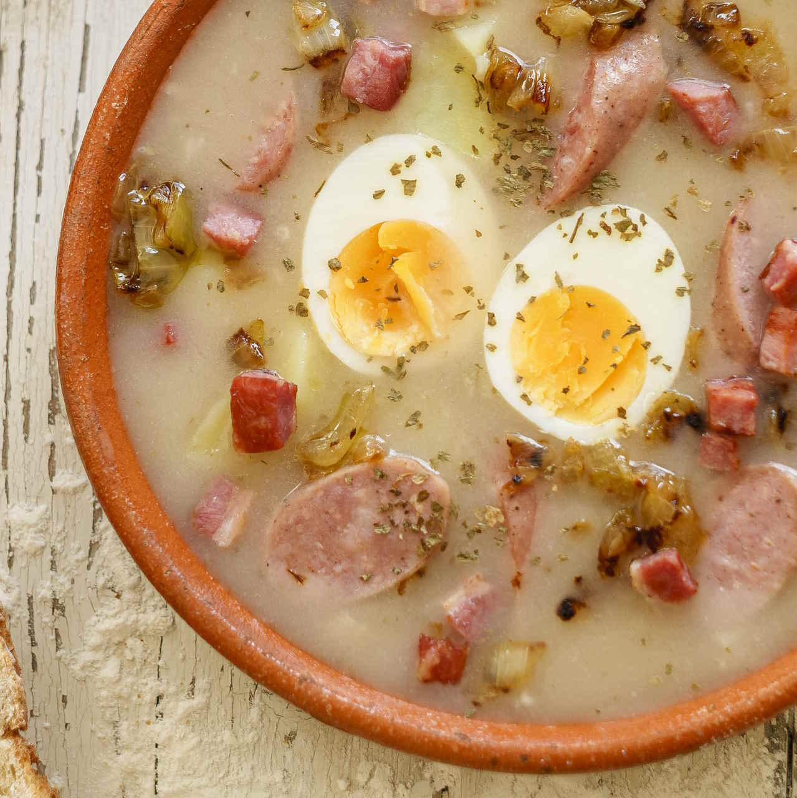
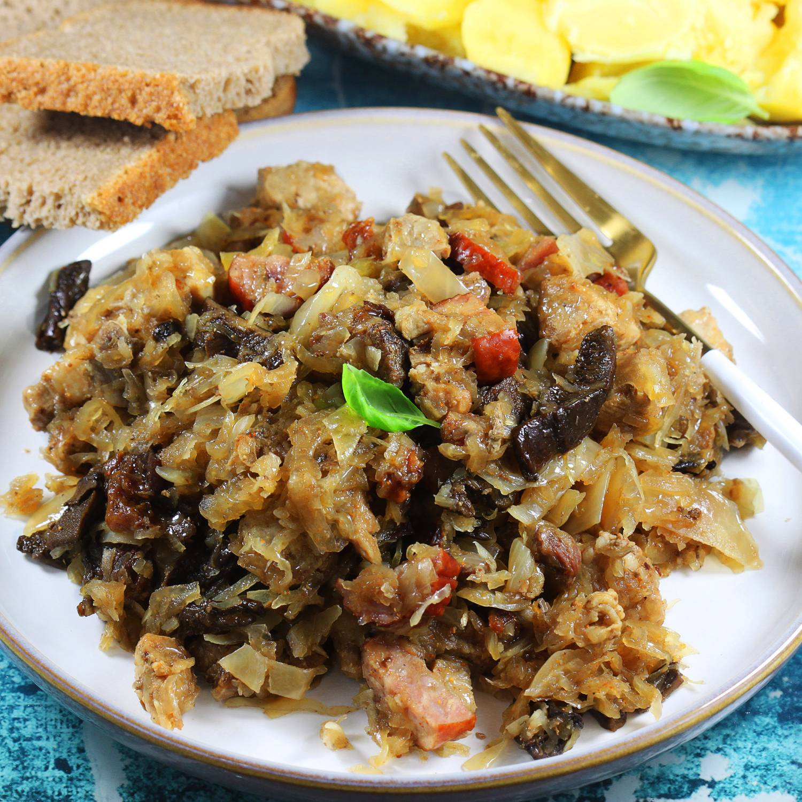
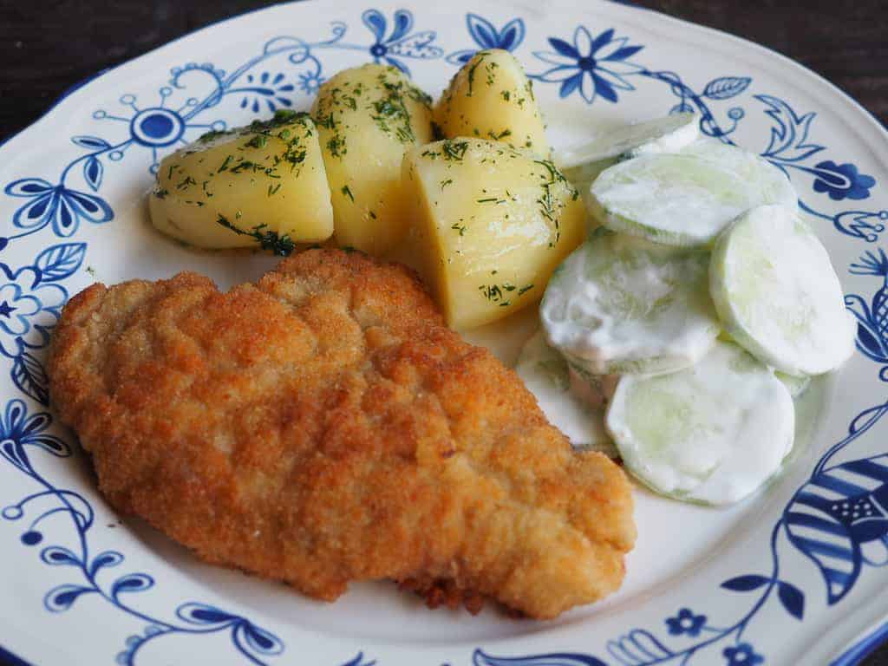

Godło
Godło Rzeczypospolitej
Orzeł Biały w złotej koronie na czerwonym polu – majestatyczny symbol potęgi, niezłomności oraz państwowości od czasów Piastów.
„Naród, który nie zna swej przeszłości, nie zasługuje na rozwój ani na przyszłość.”
Znaki naszej tożsamości, wolności i tysiącletniej historii. Poznaj głębokie znaczenie symboli państwowych Polski.
Orzeł Biały w złotej koronie na czerwonym polu – majestatyczny symbol potęgi, niezłomności oraz państwowości od czasów Piastów.

Biel symbolizuje czystość, szlachetność i pokój, a czerwień majestat, ogień oraz krew przelaną za wolność naszej Ojczyzny.

Napisana w 1797 roku we Włoszech przez Józefa Wybickiego. Pieśń, która dawała nadzieję w czasach zaborów i zjednoczyła naród.
Przeżyj ponownie epokowe wydarzenia, które ukształtowały Polskę od jej zarania po współczesność.
Książę Mieszko I przyjmuje chrzest. Wydarzenie to uważa się za symboliczny początek państwa polskiego oraz wejście w krąg kultury europejskiej.
Połączone siły polsko-litewskie pod dowództwem króla Władysława Jagiełły rozgramiają Zakon Krzyżacki w jednej z największych bitew średniowiecznej Europy.
Król Jan III Sobieski na czele polskiej Husarii powstrzymuje nawałę osmańską pod Wiedniem, ratując chrześcijańską Europę przed podbojem.
Uchwalenie pierwszej w Europie i drugiej na świecie nowoczesnej ustawy zasadniczej. Triumf myśli politycznej i dążenia do naprawy Rzeczypospolitej.
Po 123 latach niewoli pod zaborami Polska powraca na mapę świata dzięki determinacji bohaterów takich jak Józef Piłsudski czy Roman Dmowski.
Bohaterstwo mieszkańców stolicy i Żołnierzy Armii Krajowej w trwającym 63 dni zrywie wolnościowym przeciwko niemieckiemu okupantowi.
Masowy ruch społeczny na czele z NSZZ "Solidarność", który doprowadził do obalenia komunizmu w Polsce i zapoczątkował zmiany w całej Europie Środkowo-Wschodniej.
Od niezwyciężonej Skrzydlatej Husarii po najnowocześniejsze jednostki Wojska Polskiego XXI wieku.

Elita polskiej jazdy w XVI-XVIII wieku
Husaria to najskuteczniejsza jazda w historii wojskowości. Przez ponad sto lat nie poniosła żadnej znaczącej porażki na polu bitwy, wzbudzając trwogę w sercach wrogów od Bałtyku po Morze Czarne.
Broń o długości dochodzącej do 5.5 metra, dająca Husarzom przewagę zasięgu nad każdą piechotą z pikami.
Mocowane do siodła lub zbroi skrzydła z orlich piór wydawały charakterystyczny szum i straszyły konie wroga.
Triumfy pod Kircholmem (1605), Kłuszynem (1610) i Wiedniem (1683) przeszły do historii wojskowości świata.

Sojusznik NATO i nowoczesna obronność
Współczesne Siły Zbrojne RP to jedna z najszybciej rozwijających się i najnowocześniejszych armii w Europie. Łączy zaawansowaną technologię z patriotycznym dziedzictwem poprzednich pokoleń.
Światowa czołówka sił specjalnych, ceniona przez sojuszników za profesjonalizm i skuteczność bojową.
Wprowadzenie myśliwców 5. generacji F-35 Husarz oraz nowoczesnych śmigłowców bojowych Apache.
Czołgi Abrams, K2 Black Panther oraz polskie samobieżne armatohaubice AHS Krab i wyrzutnie HIMARS.
Polska kuchnia to bogactwo aromatów, staropolskiej gościnności i tradycji przekazywanej z pokolenia na pokolenie. Kliknij potrawę, by poznać jej historię!
Z mięsem, kapustą i grzybami lub ruskie – duma polskiego stołu.

Aromatyczna zupa na zakwasie żytnim z białą kiełbasą i jajkiem.

Królewskie danie z kiszonej kapusty, szlachetnych mięs i suszonych grzybów.

Klasyk niedzielnego obiadu podawany z ziemniakami i zasmażaną kapustą.
Testuj swoją wiedzę o historii, symbolach i geografii Polski. Zdobądź tytuł Mistrza Rzeczypospolitej!